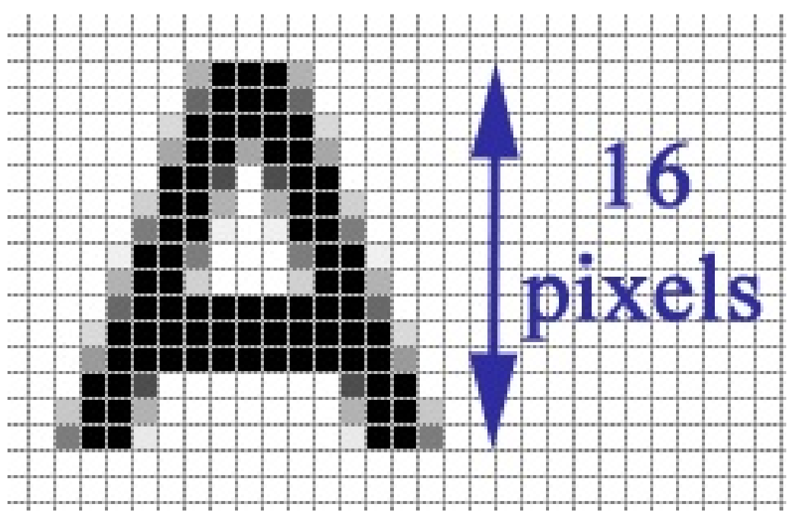
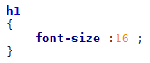
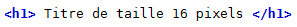
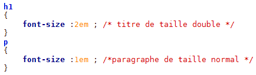
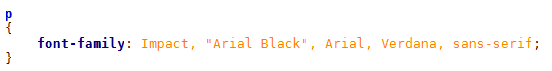
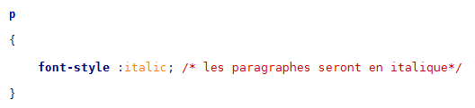
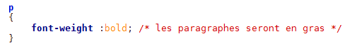
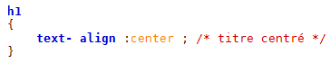

Formatage du texte
Taille
Taille absolue
La propriété font-size associée à sa valeur permet de définir la taille de mots.
Code:CSS

Code: HTML

taille relative
L'utilisation de cette technique permet de laisser le choix à l'utilisateur de choisir sa propre taille à l'aide de son navigateur. La taille normale correspond à 1em. Dans l'exemple ci-dessous, les titres de niveau 1 auront le double de la taille des paragraphes.
Code: CSS

La police
Pour qu'une police s'affiche correctement, il faut que tous les internautes l'aient. Si un internaute n'a pas la même police que vous, son navigateur prendra une police par défaut (une police standard) qui n'aura peut-être rien à voir avec ce à quoi on vous attendiez. Voici une liste de polices qui fonctionnent bien sur la plupart des navigateurs : Arial ; Arial Black ; Comic Sans MS ; Courier New ; Georgia ; Impact ; Times New Roman ; Trebuchet MS ; Verdana.

On peut préciser plusieurs polices En général, il est bien d'indiquer un choix de trois ou quatre polices (+ serif ou sans-serif) afin de s'assurer qu'au moins l'une d'entre elles aura été trouvée sur l'ordinateur du visiteur.
Code : CSS

Normal, italic, gras
Texte normal ou en italique
La propriété font-style permet de mettre le texte soit en italique (italic), soit en mode normal (normal).
-
normal
-
italic
Code : CSS

Gras
On doit utiliser la propriété font-weight associée à la valeur bold.
Code : CSS

Alignement
On utilise la propriété text-align et on indique l'alignement désiré :
left : le texte sera aligné à gauche (c'est le réglage par défaut).
center : le texte sera centré.
right : le texte sera aligné à droite.
justify : le texte sera « justifié ». Justifier le texte permet de faire en sorte qu'il prenne toute la largeur possible sans laisser d'espace blanc à la fin des lignes. Les textes des journaux, par exemple, sont toujours justifiés.
Code: CSS

Appliquer plusieurs propriétés
Régi par la licence Creative Commons Attribution Non-commercial Share Alike 3.0 License